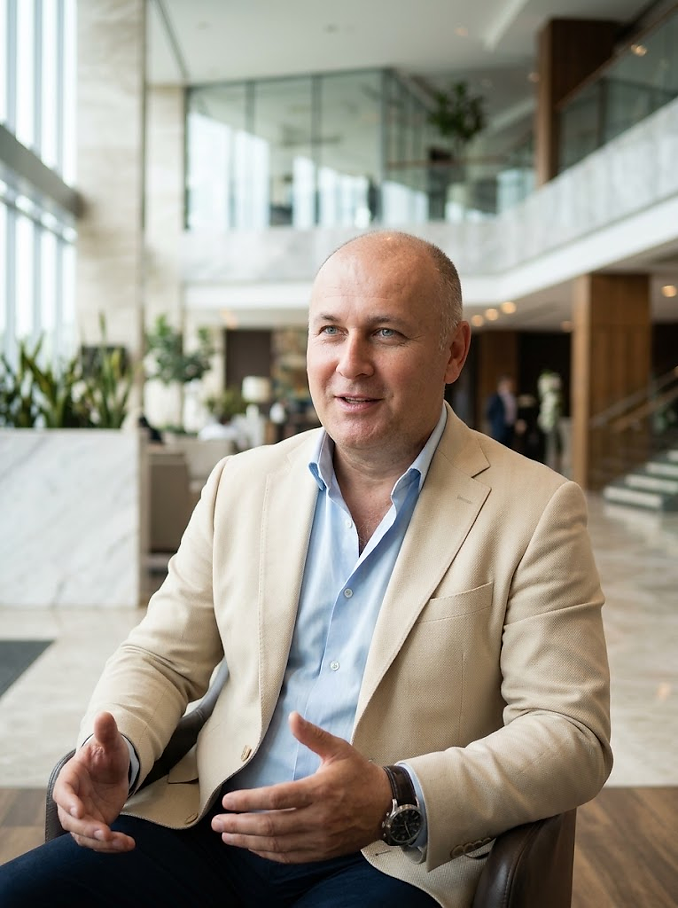

Трансцендентальная Медитация в Азербайджане
Простая, естественная и научно подтверждённая умственная техника для глубокого отдыха нервной системы, полного освобождения от стресса, укрепления здоровья и раскрытия творческого потенциала сознания.

Годына Степан Николаевич
Сертифицированный учитель ТМ
Баку • Гянджа, Азербайджан
«Подобно тому, как нужно поливать корень дерева, чтобы зеленели все его ветви, листья и плоды, так и через Трансцендентальную Медитацию человек обращается к самому корню своей жизни — Чистому Сознанию, обогащая одновременно все сферы своего существования».
— Махариши Махеш Йоги, основатель программы Трансцендентальной Медитации
Что такое Трансцендентальная Медитация?
Трансцендентальная Медитация (ТМ) — это простая, естественная, не требующая усилий техника, которая практикуется по 20 минут дважды в день (утром и вечером), сидя удобно в кресле с закрытыми глазами.
Полное отсутствие усилий
В отличие от практик концентрации, визуализации или контроля дыхания, в ТМ не нужно бороться с мыслями или пытаться «опустошить ум». Процесс основан на естественном стремлении ума к полю большего покоя, энергии и удовлетворения.
Опыт Чистого Сознания
«Трансцендировать» — значит «выходить за пределы». Во время практики активный ум спонтанно успокаивается, проходит через более тонкие уровни мысли и выходит за пределы мышления — в состояние Чистого Сознания, безграничного покоя и созидательного разума.
Глубочайший отдых для тела
В состоянии бодрствующего покоя потребление кислорода и уровень гормонов стресса стремительно снижаются. Организм получает уникальную возможность растворить даже самые глубокие хронические зажимы, которые не уходят во время обычного сна.
Важно знать: чем Трансцендентальная Медитация НЕ является
ТМ не требует веры и не вступает в противоречие ни с какими религиозными или светскими убеждениями.
Это чисто практическая психофизиологическая техника, результат которой ощущается непосредственно на опыте.
От вас не требуется менять привычный рацион питания, распорядок дня, одежду или круг общения.
Никакого напряжения глаз, удерживания образов или контроля мыслей — практике легко обучается даже ребёнок.
Как волны на поверхности океана
Представьте себе глубокий океан: на его поверхности постоянно движутся волны активных мыслей, эмоций, планов и тревог. Если пытаться силой удержать волны руками (как при попытке подавить мысли), волнение на поверхности только возрастёт. Но на глубине океан всегда остаётся абсолютно безмолвным и неподвижным. Трансцендентальная Медитация позволяет уму естественным образом опуститься с бурной поверхности в тихую глубину собственного сознания и вернуться в жизнь полным сил.
Научная классификация: 3 категории медитации
Нейрофизиологи выделяют три совершенно разных типа практик в зависимости от работы внимания и волн головного мозга (ЭЭГ):
| Тип практики | Механизм работы ума | Усилия и картина ЭЭГ мозга |
|---|---|---|
| 1. Фокусированное внимание (Концентрация) | Удерживание внимания на дыхании, точке, пламени свечи или принудительная остановка мыслей. | Высокое усилие. Быстрые бета- и гамма-волны (20–50 Гц), как при напряжённой умственной работе. |
| 2. Открытое наблюдение (Созерцание / Mindfulness) | Отстранённое отслеживание текущих мыслей, эмоций и ощущений без вовлечения в них. | Среднее усилие. Локальные тета-волны (4–8 Гц), внимание остаётся привязанным к потоку мыслей. |
| 3. Автоматическое самотрансцендирование (ТМ) | Естественный выход за пределы процесса мышления в состояние безмолвного Чистого Сознания. | Ноль усилий. Синхронные когерентные альфа-1 волны (8–10 Гц) по всей коре головного мозга. |
Что даёт регулярная практика ТМ?
Дважды в день по 20 минут глубокого погружения во внутренний покой преображают работу мозга, физиологию, эмоциональный фон и деловую активность.
Ясность мышления, память и продуктивность
- ✓ Острота внимания: способность легко фокусироваться на главном, не распыляясь на информационный шум.
- ✓ Творческий интеллект: спонтанное нахождение нестандартных, точных решений в бизнесе и профессиональной деятельности.
- ✓ Улучшение памяти: повышение скорости усвоения новой информации у студентов, специалистов и руководителей.
- ✓ Эффективность без спешки: выполнение большего объёма задач при сохранении свежести ума до самого вечера.
Здоровое сердце, крепкий сон и иммунитет
- ✓ Защита сердца и сосудов: естественная нормализация артериального давления и снижение риска гипертонии.
- ✓ Избавление от бессонницы: быстрое засыпание и глубокий, по-настоящему восстанавливающий ночной сон.
- ✓ Снятие психосоматики: уменьшение головных болей напряжения, мышечных спазмов и хронической усталости.
- ✓ Омоложение организма: замедление биологического старения клеток и укрепление иммунной системы.
Внутренняя невозмутимость и радость жизни
- ✓ Уход фоновой тревоги: растворение беспокойства, страхов, панических состояний и эмоционального выгорания.
- ✓ Эмоциональная устойчивость: внешние стрессы и кризисы перестают выводить вас из душевного равновесия.
- ✓ Свобода от вредных привычек: естественное снижение тяги к курению, алкоголю и стимуляторам.
- ✓ Прилив внутренней радости: пробуждение спокойной уверенности, оптимизма и полноты восприятия жизни.
Гармония в семье и коллективе
- ✓ Теплота и терпимость: когда уходит внутренняя усталость, исчезают вспышки раздражения на близких людей.
- ✓ Искусство диалога: способность слышать собеседника и находить взаимовыгодные решения без конфликтов.
- ✓ Лидерское спокойствие: руководитель, практикующий ТМ, передаёт уверенность и слаженность всей команде.
- ✓ Вклад в общество: каждый медитирующий человек распространяет вокруг себя атмосферу мира и согласия.
Более 600 научных исследований в 250 университетах
ТМ — самая изученная техника медитации в истории науки. Исследования проводились в Гарвардской медицинской школе, Стэнфорде, Йеле, Калифорнийском университете (UCLA) и Национальном институте здоровья США (NIH), и были опубликованы в ведущих рецензируемых журналах (Lancet, JAMA, Stroke, Hypertension).
Снижение риска инфаркта и инсульта
Многолетнее исследование Национального института здоровья США (NIH) и заключение Американской кардиологической ассоциации (AHA) подтвердили снижение смертности, инфарктов и инсультов на 48%.
Снижение гормона стресса кортизола
Биохимический анализ показывает резкое падение уровня кортизола и плазменного лактата уже в течение 20 минут практики ТМ, в то время как при обычном отдыхе с закрытыми глазами он почти не меняется.
Глобальная когерентность мозга
Электроэнцефалограмма фиксирует упорядоченную, синхронную работу правого и левого полушарий, а также лобных долей мозга в диапазоне альфа-1 (8–10 Гц), что коррелирует с высоким IQ и креативностью.
Омоложение биологического возраста
По данным исследования (International Journal of Neuroscience), люди, практикующие ТМ более 5 лет, имеют биологический возраст (давление, зрение, слух, тонус сосудов) в среднем на 12 лет моложе хронологического.
Снижение тревожности и выгорания
Метаанализ 146 независимых научных работ в Стэнфордском университете показал, что ТМ в два раза эффективнее снимает хроническую тревожность по сравнению с другими методами релаксации.
Быстрое избавление от бессонницы
Исследования фиксируют сокращение времени засыпания более чем в два раза и глубокую нормализацию фаз ночного сна уже в первый месяц регулярной практики.

Годына Степан Николаевич
Сертифицированный учитель ТМ в Азербайджане
Официальные курсы в Баку и Гяндже
Личное обучение один на один в соответствии с традицией Махариши
Трансцендентальная Медитация была возрождена и открыта миру великим ведическим учёным и учителем Махариши Махеш Йоги. Чтобы каждый человек получал подлинный опыт безмолвия ума без искажений и напряжения, техника ТМ никогда не передаётся массово по книгам или видео — обучение всегда проходит индивидуально с сертифицированным учителем.
Я родился в Гяндже и провожу официальные вводные лекции, 4-дневные базовые курсы обучения ТМ, групповые занятия и презентации в Баку (в том числе на базе Crown Wellness Club) и в Гяндже. Моя цель — передать вам практику в её первозданной чистоте и простоте, чтобы она радовала вас и приносила ощутимую пользу каждый день.
Наряду с преподаванием Трансцендентальной Медитации, я обучаю комплексу Асан Махариши как бережной физической подготовке к медитации и провожу глубокие индивидуальные консультации по ведической астрологии Джйотиш на основе классических принципов Махариши Парашары.
Джйотиш и Асаны Махариши
Гармоничное объединение трех ведических дисциплин — Трансцендентальной Медитации, Асан Махариши и астрологии Джйотиш — даёт целостный инструмент для развития сознания, здоровья тела и мудрого планирования жизни.
Асаны Махариши и Пранаяма
Специально выстроенная Махариши последовательность мягких, комфортных поз йоги (Асан) и спокойного ведического дыхания (Пранаямы), выполняемая непосредственно перед 20 минутами Трансцендентальной Медитации.
- ✦ Мягко снимает накопленную за день мышечную скованность в позвоночнике, шее и суставах без силовых перегрузок
- ✦ Уравновешивает потоки дыхания и успокаивает вегетативную нервную систему, делая погружение в ТМ ещё более глубоким
- ✦ Создаёт тонкую нейромышечную интеграцию ума и тела, доступную в любом возрасте и при любой комплекции
Ведическая астрология Джйотиш
Глубокий аналитический разбор индивидуального гороскопа рождения, основанный на первоисточнике классической традиции — фундаментальном труде Махариши Парашары «Брихат Парашара Хора Шастра».
- ✦ Комплексный анализ карты Раши (D1), положения планет (Грах) в 12 домах (Бхавах) и дробной карты Навамша (D9)
- ✦ Детальное исследование лунных созвездий (27 Накшатр) и расчёт планетных периодов и подпериодов Вимшоттари Даша
- ✦ Ясное понимание жизненного предназначения, карьеры, финансов, совместимости и благоприятных периодов для важных решений
Программа обучения: 7 последовательных шагов
Структура курса выверена до мелочей: после вводного знакомства следуют 4 последовательных дня по 1,5 часа, за которые вы полностью осваиваете технику ТМ на всю жизнь.
Вводная лекция (60 мин)
Знакомство с учителем, обзор того, что даёт Трансцендентальная Медитация для здоровья, освобождения от стресса и развития потенциала мозга, а также ответы на ваши вопросы.
Подготовительная лекция (45 мин)
Практическое объяснение механики ТМ: почему эта техника работает без усилий, чем она отличается от других видов медитации и откуда происходит традиция учителей.
Личное интервью (10–15 мин)
Короткая индивидуальная беседа с учителем сразу после подготовительной лекции для личного знакомства и выбора удобного времени вашего обучения.
4 последовательных дня основного практического курса (Шаги 4–7)
Личное обучение
Индивидуальное занятие один на один с учителем (60–90 мин), на котором вам передаётся ваша личная мантра и вы сразу получаете первый глубокий опыт медитации.
Правильность практики
Первая групповая проверка: обсуждение вашей первой самостоятельной медитации дома и важные инструкции о том, как медитировать совершенно без усилий.
Механика снятия стресса
Вторая групповая встреча: детальное объяснение того, как глубокий физиологический отдых растворяет накопленные стрессы и нормализует работу нервной системы.
Раскрытие полного потенциала
Заключительная встреча курса: обзор развития высших состояний сознания при регулярной практике и ответы на все практические вопросы.
Программа пожизненной поддержки после окончания курса
После прохождения 4-дневного курса вы всегда можете обращаться к учителю для бесплатной индивидуальной или групповой проверки практики («чекинга»), чтобы убедиться, что ваша медитация остаётся лёгкой, естественной и приносит максимум результата.
Обучение и лекции в Баку и Гяндже
Вы можете записаться на вводную лекцию, полный 4-дневный курс обучения ТМ или индивидуальную консультацию в удобном для вас городе.
Crown Wellness Club и залы Баку
В Баку регулярно проводятся вводные лекции по Трансцендентальной Медитации, открытые велнес-презентации (объединяющие ТМ, Джйотиш и Асаны Махариши), 4-дневные групповые курсы и поддерживающие встречи в комфортном пространстве Crown Wellness Club.
- • Регулярные вводные лекции и открытые презентации
- • Личное обучение и 4-дневные групповые курсы
- • Занятия по Асанам Махариши и групповые медитации
Обучение и консультации в Гяндже
В Гяндже проводятся регулярные вводные встречи, индивидуальное и групповое обучение Трансцендентальной Медитации, проверка практики для выпускников и личные консультации по ведической астрологии Джйотиш.
- • Вводные лекции по предварительной записи
- • Полный 4-дневный курс обучения ТМ
- • Индивидуальные консультации и разбор карт Джйотиш
Отзывы прошедших обучение в Баку и Гяндже
Впечатления людей разных профессий и возрастов, освоивших Трансцендентальную Медитацию на курсах Степана Николаевича.
«До знакомства со Степаном Николаевичем я думал, что медитация — это попытка силой заставить себя ни о чём не думать. На курсе в Баку я с первого дня почувствовал глубочайший отдых. Ушла постоянная спешка, нормализовался сон, появилось много сил для бизнеса и семьи».
Рустам А.
Предприниматель, г. Баку
«Огромная благодарность за курс ТМ и знакомство с комплексом Асан Махариши. Утренняя и вечерняя практика по 20 минут стала моей любимой частью дня. Даже после самых напряжённых дежурств в клинике я быстро возвращаюсь в состояние внутреннего покоя и лёгкости».
Лейла М.
Врач, г. Баку
«Проходил обучение ТМ и заказывал разбор натальной карты Джйотиш в Гяндже. Очень глубокая, точная и бережная подача материала. Давление перестало скакать от стрессов, голова ясная, на многие жизненные задачи открылись глаза».
Эльчин Г.
Инженер, г. Гянджа
«Я работаю в сфере IT, и к вечеру голова обычно гудела от десятков задач. После 4-дневного курса ТМ у Степана Николаевича ушло ощущение выгорания. Вечерняя медитация снимает усталость так, будто я заново проснулся утром».
Тимур К.
IT-специалист, г. Баку
«Много лет страдала от поверхностного, тревожного сна. Уже на третьем дне обучения в Гяндже заметила, что засыпаю спокойно и просыпаюсь до будильника полной энергии. Очень благодарна учителю за чуткость и поддержку».
Севиндж Р.
Педагог, г. Гянджа
«Впечатлила вводная презентация в Crown Wellness Club. Сразу записалась на обучение и консультацию по Джйотиш. Техника ТМ оказалась удивительно простой, а разбор периодов Даша помог спокойно спланировать важный этап в карьере».
Нармина С.
Дизайнер и маркетолог, г. Баку
Всё, что важно знать перед началом обучения
1. Получится ли у меня медитировать, если у меня очень активный ум и постоянный поток мыслей? +
Да, обязательно получится. В Трансцендентальной Медитации мы вообще не пытаемся остановить мысли или силой удерживать концентрацию. Техника использует природное свойство ума спонтанно стремиться к большему покою и удовольствию, поэтому даже самый беспокойный ум успокаивается легко на первом же личном занятии с учителем.
2. Почему нельзя научиться ТМ самостоятельно по книге, видео в YouTube или приложению? +
При чтении книги или прослушивании аудиозаписи человек неизбежно начинает контролировать себя, оценивать процесс и прилагать умственные усилия, что удерживает мозг на поверхностном уровне. Только сертифицированный учитель ТМ знает, как индивидуально подобрать подходящую вам мантру и провести вас через живой опыт лёгкого, безмолвного трансцендирования.
3. Что такое мантра в Трансцендентальной Медитации? +
В ТМ мантра — это особый ведический звук, не имеющий смыслового перевода, который подбирается учителем индивидуально для каждого ученика. Его единственная задача — служить мягким проводником («транспортным средством»), позволяющим вниманию плавно перейти от активного мышления к полной внутренней тишине.
4. Связана ли ТМ с религией, философией или отказом от привычного образа жизни? +
Нет. Трансцендентальная Медитация — это чисто практическая научная техника отдыха нервной системы и развития сознания. Она не требует изменения верований, диеты или жизненного уклада, и её практикуют миллионы людей самых разных культур и мировоззрений.
5. Нужно ли сидеть на полу в позе лотоса или соблюдать полную тишину вокруг? +
Никаких специальных поз не требуется: ТМ практикуется просто сидя в любом удобном кресле или на диване с закрытыми глазами. Более того, абсолютная тишина вокруг не нужна — обычный бытовой шум не мешает практике, поэтому медитировать можно дома, в офисе, в самолёте или поезде.
6. Как выделить 20 минут дважды в день, если у меня очень плотный график? +
Как говорил Махариши, это всё равно что сначала натянуть тетиву лука, чтобы стрела полетела быстро и точно в цель. 20 минут утренней и вечерней медитации дают такой заряд энергии и ясности, что в течение дня вы справляетесь с делами гораздо быстрее и экономите часы времени.
7. Как быстро я почувствую первые результаты от практики? +
Большинство учеников ощущают глубокое физическое расслабление, внутренний покой и улучшение ночного сна уже в первые 4 дня обучения. С каждой последующей неделей эффект накапливается, укрепляя нервную систему и стрессоустойчивость.
8. Что нужно для записи на консультацию по ведической астрологии Джйотиш? +
Для точного построения натальной карты Раши (D1), дробной карты Навамша (D9) и расчёта периодов Даша потребуются ваша дата рождения, максимально точное время рождения и город (место) рождения. Вы можете указать это при записи в WhatsApp.
Начните обучение ТМ в Баку или Гяндже
Заполните короткую форму или свяжитесь со мной напрямую по телефону и в WhatsApp, чтобы узнать дату ближайшей вводной лекции, записаться на 4-дневный курс или заказать консультацию по Джйотиш.
Телефон и WhatsApp
+994 50 533 16 29Электронная почта
stepan0902@yahoo.comМеста проведения занятий
г. Баку (Crown Wellness Club) • г. Гянджа
Быстрая запись через WhatsApp
Откроется диалог в WhatsApp с учителем (+994 50 533 16 29)